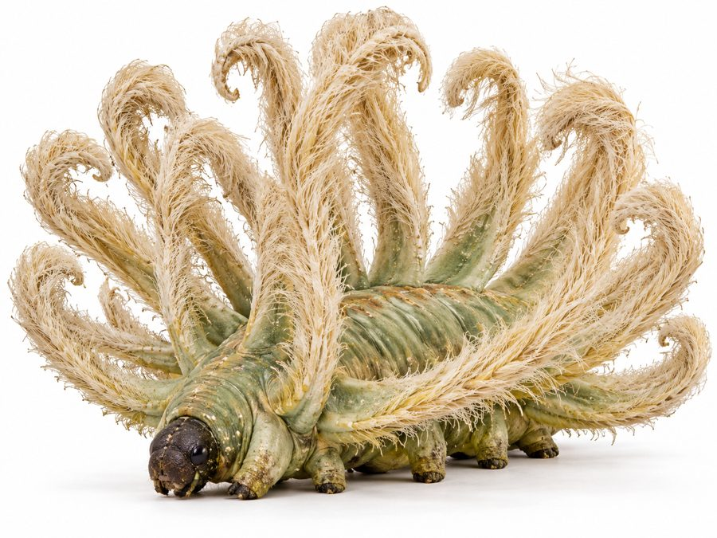
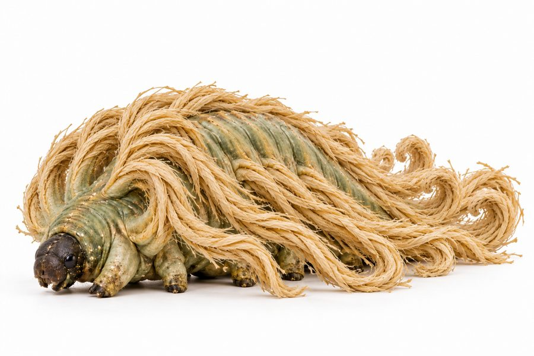

Kelnith
A caterpillar-like animal wearing a long, cape-like mantle of venomous fiber, harvested for cloth.
- Group
- Fiber and silk
- Tags
- fiber wild and farmed
- Form
- A hag-moth-caterpillar shape about a human forearm long, with a long cape of coarse, raffia-like fibers. Decided
- Life cycle
- A permanent larva. It never becomes a moth. Decided
- Defense
- The cape is its defense. The strands are venomous and must be detoxified after harvest. Decided
- Range
- Shares Ruqoravael with the Zelnith. Canon
Two ways to harvest
| Mode | How | Fiber |
|---|---|---|
| Wild | Collected at the molt only. | Coarser and more venomous. Premium grade. |
| Farmed | Sheared between molts from managed herds. Captive animals do not need the cape for defense. | Finer, more uniform and milder, with a slightly different texture from inbreeding. |
Both are Decided.
Cloth
The result is coarse, breathable, closer to linen or raffia than silk. It is the everyday cloth of Ishphaeno, worn by soldiers, servants and common households. Canon
Notes
How the Kelnith reproduces is still undecided. Open

